A house entirely wood built T3 + 1 and has 2 bedrooms with double beds, 1 bedroom with 2 single beds (bunk beds), a spacious living room. You also have the opportunity to participate in the farm’s tasks
Contact us
CONTACT WITH NATURE, ANIMALS AND OUTDOOR ACTIVITIES See activities